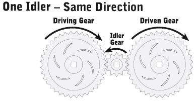
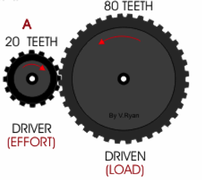
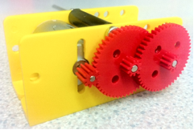
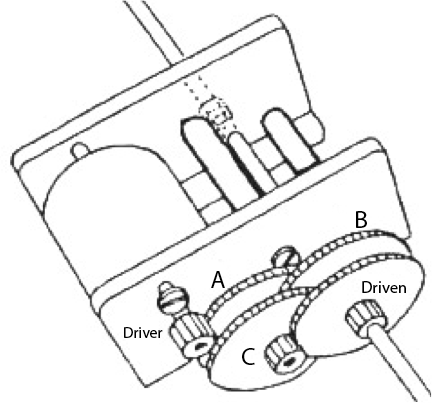
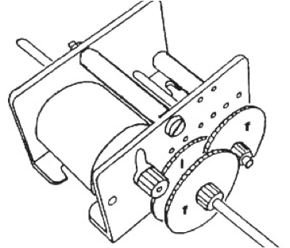
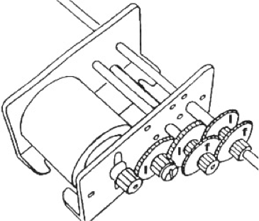
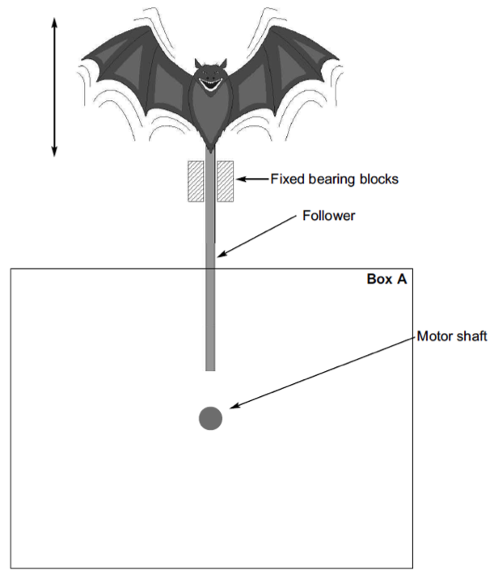
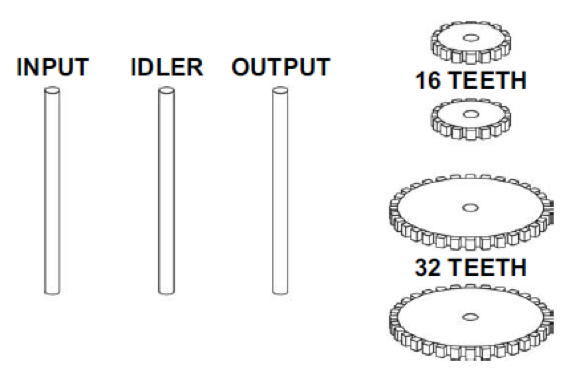

Gear Ratios
Table of Contents
1 Introduction
- When creating a Systems and Control project, the right choice of gear ration will ensure that your motor is capable of handling the load you are sending it, and that the mechanism moves at the right speed. The gearboxes in the kits we use (Rapid Electronics part no: 37-1220, instructions available here) should be sufficient for most applications at GCSE level.

- In a gear system, the gear connected to the power souce (e.g. a DC motor) is known as the driver gear. The output gear (e.g. one with a wheel on it) is known as the driven gear.
- Sometimes, a free-wheeling gear (or several) is added in the middle of the gear chain. This is known as an idler gear. Adding one ensures that the output gear rotates the same way as the driver. It also allows the gears to be further apart.
2 Calculating Ratios
- Gears allow the speed and output power of a motor to be changed. By reducing the speed of the output, the torque (amount of turning power) of the output gearin increases. The reverse also applies.
- On a bicycle, a low gear ratio (i.e. a small gear on the pedals driving a larger gear on the rear wheel) helps when climbing hills - the cyclist has to pedal more times to get up the hill distance, but each cycle of the pedals takes less effort.
Simple gear chains
- With single gears, gear ratios are simple mathematics. If gear A has 20 teeth, and B has 80, we express this as…
 Gear ratio = 80:20 = 8:2 = 4:1
This tells us that gear A will to revolve 4 times for each full revolution of gear B. If gear A was connected to a motor which spins at 1000rpm (Revolutions Per Minute), gear B would spin at 250rpm.
Double gears
- This gets more complicated when we use double gears, though. We have some kits in school that you can experiment with. What if we connected up the gears from one of the kits like this?
 In the photo above, all the gears are inserted onto 3mm shafts. Red gears are “tight” – they need gently tapping with a small hammer to make them sit on the shaft, but then they rotate with the shaft after that. The grey gears are “loose”, and can spin freely on the shafts.
The gear that is connected to the motor has 10 teeth.
The large double gears have 50 teeth on the larger cog, and 10 on the smaller.
Smaller double gears (not shown in this picture) have 30 teeth on the larger cog, 10 on the smaller.
In the photograph, the middle gear is being driven at a 5:1 ratio. By adding another 5:1 gearing ratio (the right-hand gear), we multiply the effect by 5, and get 25:1 on the right-hand gear.
If we were to add another 50/10 gear, we could multiply by 5 again, and achieve 125:1.
Using gears in this way, very large ratios (generating surprising amounts of torque) can be achieved.
Example 2 
- In the picture, the driver (a DC motor) is connected to a single, 10-tooth gear. This is meshed to the double gear labelled A, which is meshed to another labelled B. B is meshed to C. which turns the driven gear. There are three idler gears in this system.
- The 10 tooth drive gear to 50 toothed gear gives 5:1.
- 10 toothed gear to 50 tooth gear gives 5x5:1 = 25:1.
- 10 toothed gear to 50 tooth gear gives 5x25:1 = 125:1.
- 10 toothed gear to 50 tooth gear gives 5x125:1 = 625:1.
If connected to a 3v 13,500rpm motor, the final gear would move at 21.6rpm (13500 ÷ 625), revolving approximately once every three seconds (21.6÷60).
3 Recap
Practice Questions
- In a simple gear train, gear A (the driver gear) has 20 teeth. Gear B has 200. Calculate the gear ratio.
- For each of the following gearboxes, calculate how long it takes for the last gear to rotate once when using a standard 3v, 13,500rpm motor.
- This setup uses three 50/10 double gears after the 10 tooth gear that comes from the motor.

- This setup uses five 30/10 double gears after the 10 tooth gear that comes from the motor.

- Billy wants to use a motor to drive a model of a crane he is creating. Using 50/10 and 30/10 gears, suggest a gearbox configuration that would give him a 75:1 ratio.
Past Paper Questions
June 2008, Q7. This question is about a mechanism for a bat in a ghost train. 7 (a) Draw a cam mechanism in Box A (below) that will make the bat move up and down continuously.  Note:
- the bat should stay down for half a revolution and then rise up and lower back down
- the bat is drawn at its lowest position
- use the rotary motion of the motor shaft to turn the mechanism.
In use the follower was found to stick in the bearing blocks. Modify the end of the follower to prevent it sticking during use. (1 mark)
7 (c) When in use, the bat moved up and down too quickly. On the diagram below, show how the speed of the bat could be reduced by the maximum amount. Use the four spur gears given. 
Complete the diagram using the provided shafts and gears. (5 marks)
7 (d) State the type of gear system that you have designed. (1 mark)
7 (e) The motor spins at 100 revolutions per minute (rpm). Calculate the speed of the output shaft in your gear system above. Formula: Calculation: Answer with units: (4 marks)
7 (f) State another advantage (other than reducing speed) that the above gear system gives. (1 mark)